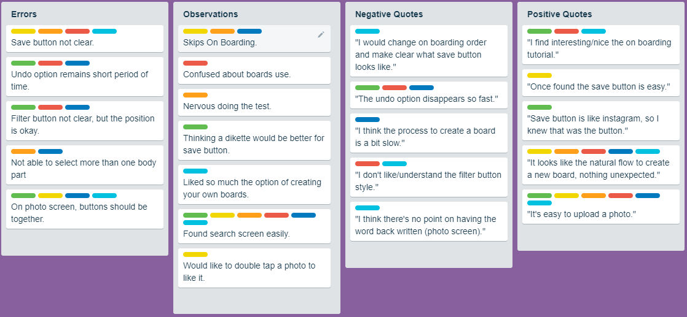
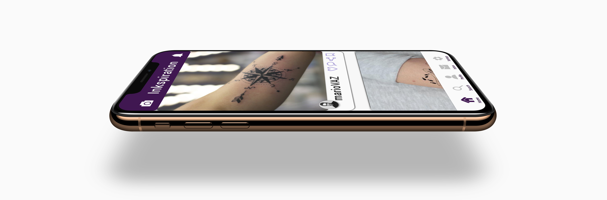

INKspiration is an app created to help you choose that perfect tattoo for you with the artist you need. It’s a social network for tattoo lovers and also for beginners or just curious people.


Nowadays, tattoos are more accepted than any time before and they are accepted by the majority of the population even though they might not like them. However, there’s a problem for those who are thinking about getting a tattoo, they want to search for inspiration, so they need a way of searching and filtering results as they want to. And what about tattoo artists? Do they have a common place to upload their work?
INKspiration aims to mitigate those problems by creating a functional app to supply these needs.
‘INKspiration’ is a social network destined to everyone who’s passionate about tattoos. It’s main purpose is to find the right inspiration for you, regardless of whether you’re an artist or just looking for your next tattoo. You can like a post or even create your own boards and save the photos you like categorizing them as you want. Chat, ask and find the right artist for you, with INKspiration there are tonnes of possibilities.
The goals of this app are:
To get a better understanding of what the users have and what they demand, I searched for several competitors, whose main goal focused on providing tattoos images and promote artists, in order to gather some information about how they structured their apps/webs and what they lack.

Reason: This a very useful way to evaluate a lot of quantitative data from many people around the world, which is very important, since the app orientation aims to be used globally. The questions will be sort and closed-ended so people won’t be bored and leave the test.
What I learnt: The more surveys done, the more we can get to know our clients and the best we can approach to move in the right direction.
Reason: This is a good method to evaluate qualitative and attitudinal information about users asking them open-ended questions and digging deeper depending on those since the interviews are face to face and can lead to a conversation, making them more natural, what will cause interviewees to answer easily.
What I learnt: There were quite a few interesting things I learnt from these interviews. Some of them are: how people handle to decide a tattoo, the importance of choosing a tattoo artist or social media impact on tattoos.
CONCLUSION: The better we know our users, the better our app will help them. Knowing what they need and how they think is the main goal to reach with these research methods.
To summarize all the information recollected from the previous step and highlight the key points, I created 2 personas with a very different point of view since one is a tattoo artist and the other someone willing to do a tattoo. This differentiation is very important, the app is for everyone, but this kind of profiles requires some different attention in terms of search or account management.
Those user personas helped me to create journey maps and user flows in order to make a first approach of how users would really interact with the app itself.
This help me understand key points and paint points, where should I focus more and what could I do to make the user experience easier and satisfactory.
User flows were incredibly helpful when it came the time to create the site map for the app. I analyzed all the information recollected at the time, with the intention of re-affirm the key points of the project and how people would be going to interact with the app. I created my first idea of the site-map and then decided to do a closed card sorting study in order to know where other people expect to find certain features of the app. When that process concluded, I updated the site map in order to make it more intuitive basing on people’s answers.
I did progressive sketches starting from very simple ones to know the sizes and locations of everything needed. First sketches were made by hand on paper, roughfly and fast, since they weren’t orientated to have much detail. Little by little they were improved. I used Balsamiq to create mid-fidelity wireframes as they had a little more detail and were more accurate when it comes to space.
Research showed that most users garnered inspiration from Instagram and Pinterest. As a result, I chose grid layouts and scrolling to mirror common social media platforms.
Before continuing, I created a simple prototype to test by myself how intuitive the app was, did the changes necessary and after that, I conducted some usability tests with 6 people from my target audience. I asked the testers to do 3 different actions from the core features. During the test, I observed users actions and asked them to think aloud as much as possible, so I could take notes on everything they noticed, good and bad things.
After that, I recollected all the information and created an affinity map (shown above) to summarize the common ideas between testers. I ranked results based on Jakob Nielsen’s severity of errors rating scale and proceed to do the changes needed on the wireframes.
Also I did some preference tests(A/B Testing) on important screens to ensure what were more attractive to users.
The pallete is composed by a primary and secondary color, with a lighter tone for each one. Color palette is based on purples. But why choosing this color? Purple is associated with wisdom, dignity, independence, creativity, mystery, and magic. We believe that tattoos are a way to express ourselves (creativity) in the way we want, being clear or just with subtle touches (mystery) in the only way you want. This is the magic that resembles tattoo world.
Text is simple, I used Roboto typography since it matches perfectly the app style, being very easy to read and clear. I played with sizes and bold/regular, to create different sensation with the same typography.
Talking about corners, there are two types, completely round or slightely. It can be seen for example on buttons, which follow this guides.
Here are some examples of how the app looks like.
The images on the intro screens are meant to represent a the main features of the app, so you’ll already know what you’ll find on the app. I focussed on using simple icons to make the experience easy and understandable. Each screen has a different message that clarifies the app’s intent.
From this you can log in or sign up, depending on if you have an account. To create an account you can select if you’re a tattoo artist and give more information about you, such as where you work at or your main styles.
Before continuing, I created a simple prototype to test by myself how intuitive the app was, did the changes necessary and after that, I conducted some usability tests with 6 people from my target audience. I asked the testers to do 3 different actions from the core features. During the test, I observed users actions and asked them to think aloud as much as possible, so I could take notes on everything they noticed, good and bad things.
The idea behind this feature is that users can search to find exactly what they want regardless if it is a tattoo, an artist or and studio. Each tab will have each own filters to have more accurate results basing on user’s likes. This way we want to make sure, everyone has the opportunity to find their inspiration and the right tattoo for them.
As I said before there are different two kind of profiles depending on if you are or not an artist. Everyone will have a profile picture, be able to upload/like/save a photo as they want and more basic things, but on artist profile there will be another important feature. People who has done a tattoo by them, will be able to post a comment on their profile and punctuate artist. This way when people search for an artist, can see also what other people think about he/she.
Why an inbox feature on app that is focused on searching tattoos? Because the idea is also to connect people with the same passion and there is another characteristic in which users can request a consultation for a tattoo and they will be able to put in contact with the artist they desire. They will be asked to leave a comment, style, size and place where they want to have the tattoo done. The artist will recieve this request and proceed to accept or decline it and anwer the user..
Along this project I learned to take the time needed for every individual part and indulge each one as they should be. This way is the best to get everything done correctly, so you won’t have to go back and forward to make sure everything is done as it should. It might sound obvious, but sometime the desire to continue and impatiente to see the final result may take the control and you can obviate things that shouldn’t or forget to consider important thing.
I loved doing this app and learning from everything I’ve done. I think it’s impressive to see how many people think differentely, but at the same time they want the same. Why I say this? Because while developing the app, I could talk with a lot of people and many of them gave different ideas of what they wanted, and I had to thought about a way of making a common point for them, since the main objective was to help on the tattoo community with my project.
I think I’ve managed to commit my objective, with an app where you can search and filter results of tattoos, studios and artist. Just in one app you can do several things and create your boards, so you can organize pics as you want. Also you can talk and request an appointment with an artist or an artist show his/her portfolio. This app is a way to simplify every tattoo lovers needs.
Hope you liked it!

Contact me to discuss about it. Surely I can help you accomplish your goals.